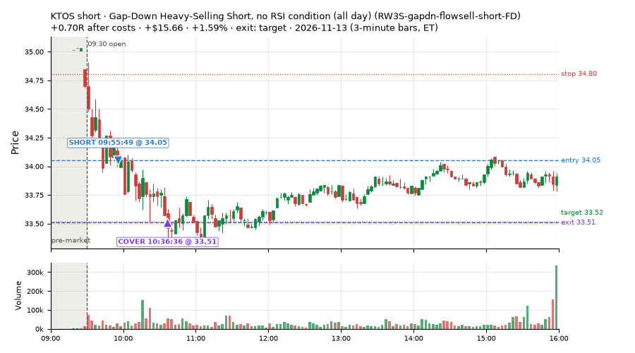
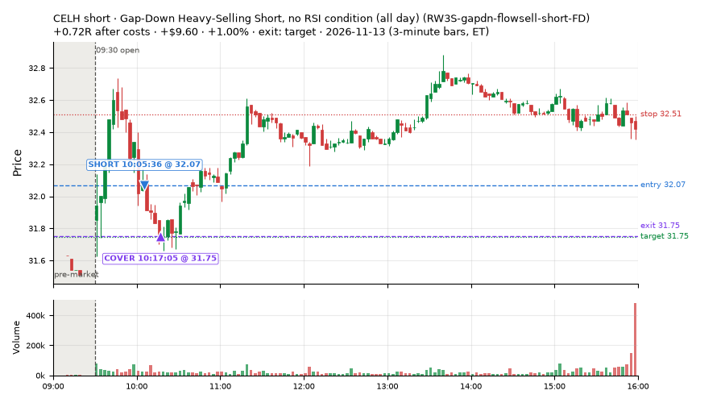
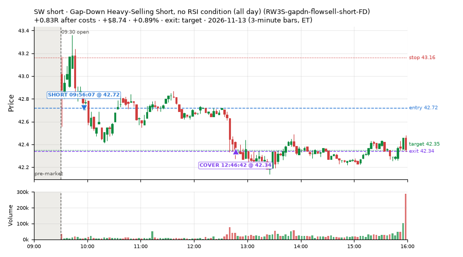
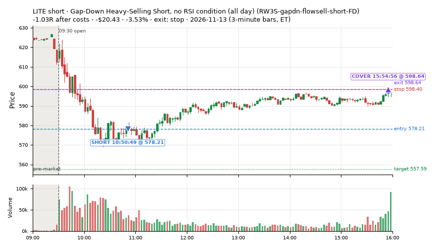
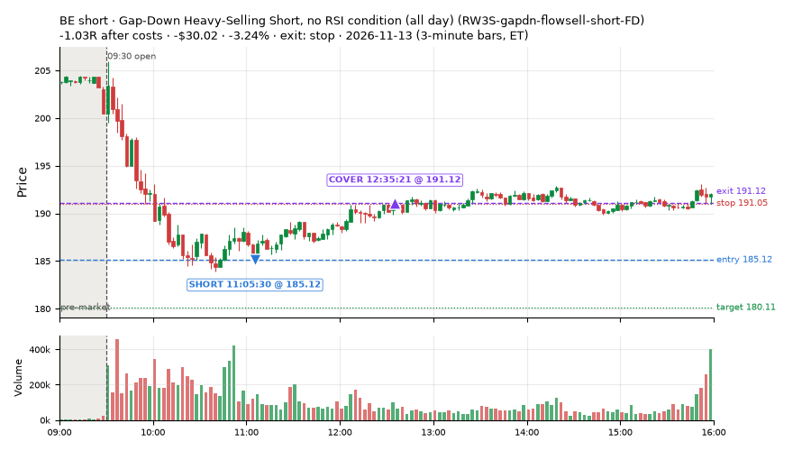
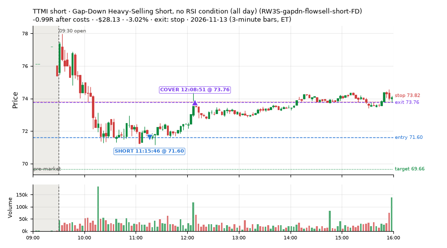
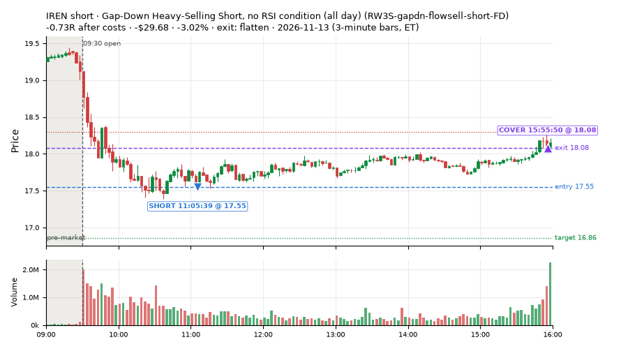
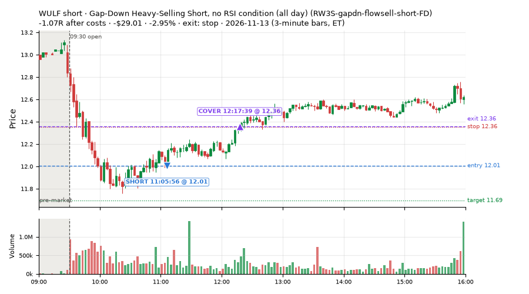

40 trades · win rate 28% · P/L $-412.36
PROBATION: no live setup has passed both locked test periods. 10 owner-directed setups added 2026-10-08 (MarcoFlow top 5 + 5 new), untested live. RW6G1 (RW6 + VWAP band guard) added 2026-10-09, probation.

| Symbol | Setup | Side | In | Out | Entry | Exit | Exit reason | % gained | P/L |
|---|---|---|---|---|---|---|---|---|---|
| KTOS | Gap-Down Heavy-Selling Short, no RSI condition (all day) (RW3S-gapdn-flowsell-short-FD) | short | 09:55 | 10:36 | 34.05 | 33.51 | target | +1.59% | $15.66 |
| CELH | Gap-Down Heavy-Selling Short, no RSI condition (all day) (RW3S-gapdn-flowsell-short-FD) | short | 10:05 | 10:17 | 32.07 | 31.75 | target | +1.00% | $9.60 |
| SW | Gap-Down Heavy-Selling Short, no RSI condition (all day) (RW3S-gapdn-flowsell-short-FD) | short | 09:56 | 12:46 | 42.72 | 42.34 | target | +0.89% | $8.74 |
| Symbol | Setup | Side | In | Out | Entry | Exit | Exit reason | % lost | P/L |
|---|---|---|---|---|---|---|---|---|---|
| LITE | RW3S-gapdn-flowsell-short-FD | short | 10:50 | 15:54 | 578.21 | 598.64 | stop | -3.53% | $-20.43 |
| BE | RW3S-gapdn-flowsell-short-FD | short | 11:05 | 12:35 | 185.12 | 191.12 | stop | -3.24% | $-30.02 |
| TTMI | RW3S-gapdn-flowsell-short-FD | short | 11:15 | 12:08 | 71.60 | 73.76 | stop | -3.02% | $-28.13 |
| IREN | RW3S-gapdn-flowsell-short-FD | short | 11:05 | 15:55 | 17.55 | 18.08 | flatten | -3.02% | $-29.68 |
| WULF | RW3S-gapdn-flowsell-short-FD | short | 11:05 | 12:17 | 12.01 | 12.36 | stop | -2.95% | $-29.01 |








Signal to fill: median 2s, 90th percentile 6s (40 trades). Bars close each minute; the order follows the bar close.
Best excursion (MFE): median 0.29R; worst (MAE) median 0.94R. 48% of trades never got +0.25R in our favour; 0 reached +1R and still closed at or below 0.
| Symbol | Setup | Best R | Worst R | Closed R |
|---|---|---|---|---|
| APLD | RW3S-gapdn-flowsell-short-FD | +0.74 | -1.01 | -1.08 |
| HOOD | RW3S-gapdn-flowsell-short-FD | +0.65 | -1.01 | -1.04 |
| TSCO | RW3S-gapdn-flowsell-short-FD | +0.62 | -0.99 | -1.06 |
| ARE | RW3S-gapdn-flowsell-short-FD | +0.57 | -1.07 | -1.07 |
| DELL | RW3S-gapdn-flowsell-short-FD | +0.86 | -0.82 | -0.63 |
| Entry time | Trades | Win | Avg R | P/L |
|---|---|---|---|---|
| 09:50-10:30 | 7 | 43% | -0.24 | $-23.30 |
| 10:30-11:30 | 25 | 16% | -0.72 | $-369.86 |
| 11:30-13:00 | 4 | 25% | -0.35 | $-19.04 |
| 13:00-14:00 | 1 | 100% | -0.02 | $0.02 |
| 14:00-16:00 | 3 | 67% | +0.02 | $-0.18 |
| Setup | Trades | Win | Avg R after costs | Adj R (net of SPY) | Avg R ex-market (all sessions) | P/L |
|---|---|---|---|---|---|---|
| Generated: MACDhge0p12, Ret15mATRlem0p069 LATE long (BRvwgt0p5, t05s1) (GEN-261027-01-MACDhge0p12-Ret15mATRlem0p069-LATE-BRvwgt0p5-t05s1-long) | 2.0 | 50% | -0.02 | -0.09 | – | $-1.35 |
| Generated: RSI14le35, FromOpenge2 AM short (BRvwlt0p5, t1s1) (GEN-261027-07-RSI14le35-FromOpenge2-AM-BRvwlt0p5-t1s1-short) | 1.0 | 100% | +0.01 | +0.26 | -0.48 (beta -1.28, n 26) | $0.46 |
| NS1-rsidip-rsi5pop-long-FD | 1.0 | 100% | +0.37 | +0.58 | -0.77 (beta -0.69, n 5) | $6.16 |
| Big Loser VWAP Reclaim Fade (NS3-failed-vwap-reclaim-short) owner-directed; holdouts once: Sep-Oct +0.119R n65, Apr-Jun -0.136R n524 | 1.0 | 0% | -0.38 | +0.27 | – | $-2.66 |
| Gap-Down Heavy-Selling Short, no RSI condition (all day) (RW3S-gapdn-flowsell-short-FD) | 35.0 | 23% | -0.60 | -0.45 | -0.14 (beta -1.02, n 77) | $-414.97 |
Market direction (SPY, beta 1) accounted for $-96.28 of today's $-412.36; the rest ($-316.08) came from the setups themselves. Avg R net of SPY: -0.37 (incl. a hedge leg's cost; report only).
10 setups live today. Today: 87 signals, 40 taken, 0 lost because another setup held the symbol (0%). Since 2026-11-12 (2 sessions): 274 signals, 115 taken, 0 lost to other setups (0%). Peak open positions today 30 of 200 slots. Earnings blackout removed 547 symbols before scanning.
Simulated playing time (not live): 159 what-if trades of signals not taken, avg -0.32R, 35% winners; of them 0 lost to another setup.
| Prio | Setup | Today sig / taken | Sessions | Signals / taken / trades | Taken/day | Expected/day | Lost to other setups | Lost to (setup n) | Top skip reasons | SIMULATED: not-taken n / avg R / win | Verdict |
|---|---|---|---|---|---|---|---|---|---|---|---|
| 1 | Backside Lower-High Short (big runner) CWT04-backside-lh-a25-short | 0 / 0 | 2 | 0 / 0 / 0 | 0.00 | – | 0 | – | – | 0 / – | quiet - wait no signals in 2 session(s); too early to tell |
| 2 | Index Dip Bounce 5 3x S&P IDX5-spy050-0945-3x-trail | 0 / 0 | 2 | 0 / 0 / 0 | 0.00 | – | 0 | – | – | 0 / – | quiet - wait no signals in 2 session(s); too early to tell |
| 3 | * SPY Dip of 0.30%, Breadth Turn (SPXL, trailing) (near-miss) LD8-spy-dip030-breadthturn-spxl-holdtr-long | 0 / 0 | 2 | 0 / 0 / 0 | 0.00 | – | 0 | – | – | 0 / – | quiet - wait no signals in 2 session(s); too early to tell |
| 4 | Prior-Day Low Sweep Reversal to VWAP LIQ-pdl-sweep-open15-vwap-long | 0 / 0 | 2 | 0 / 0 / 0 | 0.00 | – | 0 | – | – | 0 / – | quiet - wait no signals in 2 session(s); too early to tell |
| 5 | Big Gainer Fade with VWAP Band Guard RW6G1-ns2-up3-vwap2sd-short | 0 / 0 | 2 | 3 / 2 / 2 | 1.00 | 0.40 | 0 | – | spread / quote / size 1 | 1 / +1.73R / 100% | slow 5.0 entries/week; ~12 weeks to 60 trades |
| 6 | Generated: MACDhge0p12, Ret15mATRlem0p069 LATE long (BRvwgt0p5, t05s1) GEN-261027-01-MACDhge0p12-Ret15mATRlem0p069-LATE-BRvwgt0p5-t05s1-long | 7 / 2 | 2 | 7 / 2 / 2 | 1.00 | – | 0 | – | spread / quote / size 4, other 1 | 5 / +0.21R / 60% | slow 5.0 entries/week; ~12 weeks to 60 trades |
| 7 | Generated: RSI14le35, FromOpenge2 AM short (BRvwlt0p5, t1s1) GEN-261027-07-RSI14le35-FromOpenge2-AM-BRvwlt0p5-t1s1-short | 3 / 1 | 2 | 86 / 26 / 26 | 13.00 | – | 0 | – | not shortable / shorts off 35, spread / quote / size 18, other 7 | 60 / -0.67R / 17% | ok 65.0 entries/week |
| 8 | Gap-Down Heavy-Selling Short, no RSI condition (all day) RW3S-gapdn-flowsell-short-FD | 73 / 35 | 2 | 164 / 77 / 77 | 38.50 | – | 0 | – | spread / quote / size 54, other 17, not shortable / shorts off 16 | 87 / -0.18R / 41% | ok 192.5 entries/week |
| 9 | Big Loser VWAP Reclaim Fade NS3-failed-vwap-reclaim-short | 2 / 1 | 2 | 7 / 3 / 3 | 1.50 | 3.03 | 0 | – | not shortable / shorts off 2, spread / quote / size 2 | 4 / +0.83R / 100% | slow 7.5 entries/week; ~8 weeks to 60 trades |
| 10 | NS1-rsidip-rsi5pop-long-FD NS1-rsidip-rsi5pop-long-FD | 2 / 1 | 2 | 7 / 5 / 5 | 2.50 | 5.39 | 0 | – | spread / quote / size 1, other 1 | 2 / -0.35R / 50% | slow 12.5 entries/week; ~5 weeks to 60 trades |
Every trade is attached as a CSV you can open and edit in Excel or Google Sheets. Live page: https://misiti15.github.io/MCF/live/